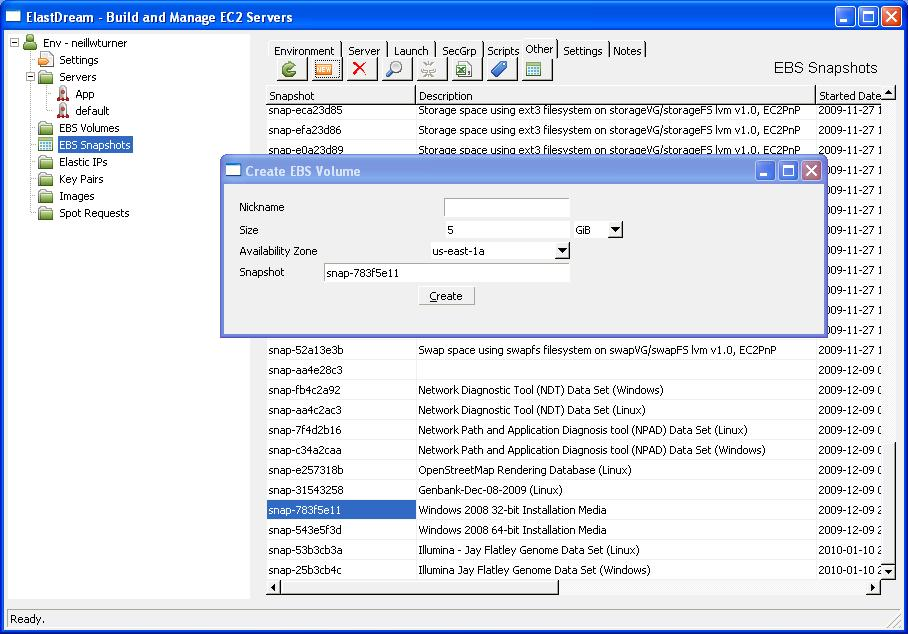
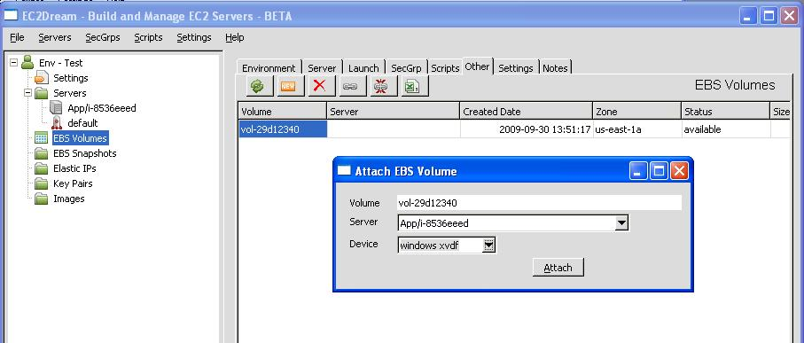
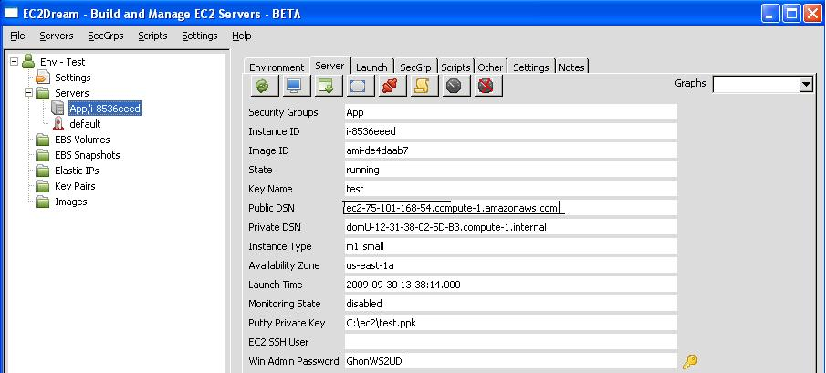
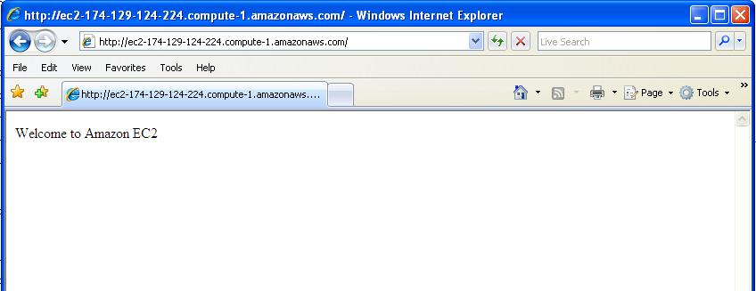
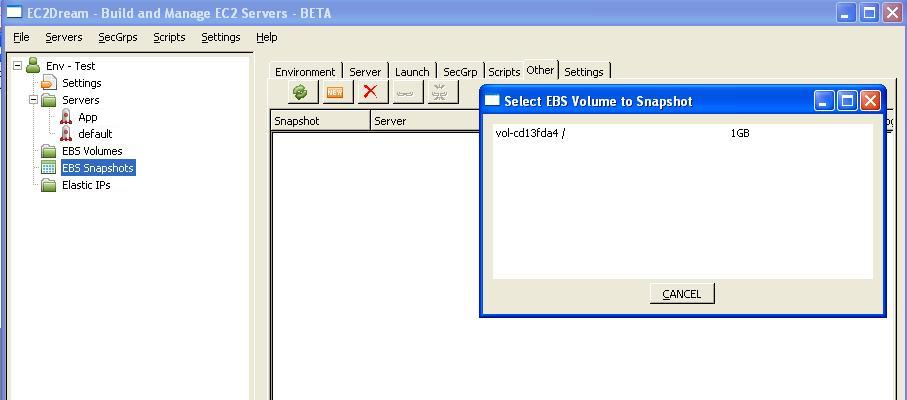
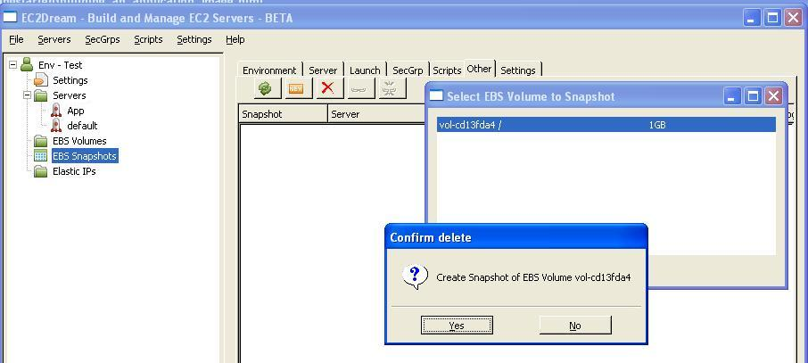
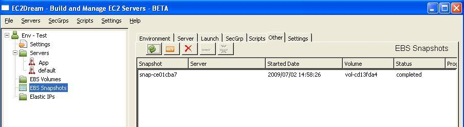
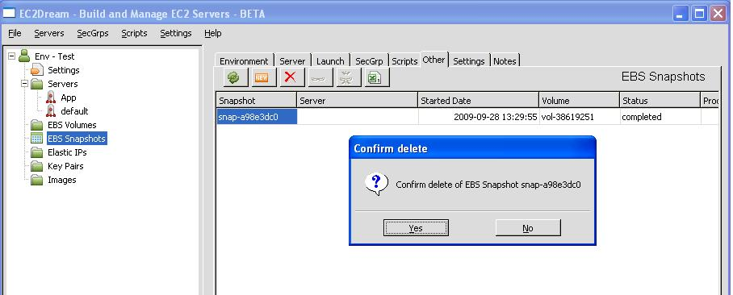

Build a Windows Application Image.
Core Concepts
The sections below outline the core concepts used in this tutorial.Script
Commands to run remotely on a server to perform configuration. Scripts are in powershell format.Amazon EBS Snapshot
Amazon EBS provides the ability to create point-in-time snapshots of volumes, which are persisted to Amazon S3. These snapshots can be used as the starting point for new Amazon EBS volumes, and protect data for long-term durability. The same snapshot can be used to instantiate as many volumes as you wish.Start an Apps Server
1. Create a new Windows Security Group called Apps.2. Create a Launch Profile the same a the base profile will an Image of the base image created earlier.
3. Launch the Server.
Optionally add a separate EBS Volume
If you wish to install you application on a mounted EBS drive then perform the following: 1. In Remote Desktop run the EC2 Config service:C:\Program Files\Amazon\Ec2ConfigSetup\EC2ConfigServiceSettings.exe
a. In the General Tag Click the set Password to enabled to continue generating random passwords for the admin user.
NOTE: Alternatively In Remote Desktop go to Windows security and change the Administrator password so it will be known in the future.
b. In drive mapping set the E driver to the volume App so that the EBS we create in the next step will be mounted on the E drive.
2. Edit the base_initEBS.ps1 and change the <host> to the server ie App so it will be formated with volume App.
NOTE: The volume must must the volume specified in the drive mapping in the EC2ConfigService.
3. Initialize the EBS. In Remote Desktop go into Powershell cd to C:\admin and run
./base_initEBS.ps1
4. Make the EBS attach at startup.
a. Run "gpedit.msc"
b. Go to local computer setting > Computer Configuration > Windows Settings > Scripts start-up/shutdown.
c. Double click on start-up and add the script C:\admin\mountebs.cmd
5. Create a new EBS volume from a snapshot of the Window 2003 installation disk. Click on the "EBS Volumes" in the tree of EC2Dream System Admin.
Create an EBS by clicking on the new icon

6. Attach the EBS volume to the Windows 2003 Server instance. Click on the attach icon
Select the volume, instance and device and press attach.

Build Application
1. If using a separate EBS:in the Remote Desktop of the Windows 2003 Server machine install IIS on the E Drive as per http://blog.its.ac.id/chika/2008/02/29/installing-iis-on-other-drive/
- Run c:\admin\setupiis_on_e.bat.
- When it prompts for the Installation Disk give it drive F:\Disc1\i386 Folder.
NOTE: An alternate approach would be to install iss on C: driver and configure the wwwroot on the E: drive.
2. Otherwise install on C:
Start Application
1. If IIS is not already started run NET START w3svc.2. Copy c:\admin\index.htm to \E:\Inetpub\WWWroot
3. Add port 80 to the App security group by going to the SecGrp tab and clicking on the Make Authorization icon

4. Enter 80 in both the "From Port" and "To Port" fields and press "save"

5. Note the Public DSN in the Server tab.

6. Go into a browser and enter the Public DSN address and you should see the iis initial screen return.

Stop Application
In a command window on the windows 2003 server NET STOP w3svc.Take EBS Volume Snapshot
Once you have formatted a volume and made any necessary changes, you can take a snapshot of the volume so that you have a point in time record of the block storage. The snapshot occurs asynchronously and the volume's status indicates "pending" until it completes. To complete this snapshot:
1. Click on "EBS Snapshots" in the tree of EC2Dream System Admin and then click on the new icon
2. Select the volume to snapshot and press "Yes" to confirm. This will kick off a snapshot task,

3. This which will go to "completed" status when done. You may need to click the refresh button

Delete EBS Volume Snapshot
To delete the Amazon EBS snapshot:
1. Click on the "EBS Snapshots" in the tree of EC2Dream System Admin and then click on the delete iconSelect the snapshot to delete and press "Yes" to confirm.
